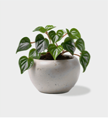

 This web interface presents a comprehensive view of Monstera plant care through live sensor data, capturing key variables such as light levels, soil moisture, and temperature. Real-time insights are vital for understanding the nuanced needs of Monstera plants, empowering enthusiasts and cultivators to tailor their care routines. By leveraging this dynamic data, users can create an environment that fosters the robust growth and distinctive beauty of Monstera plants, ensuring their health and vitality.